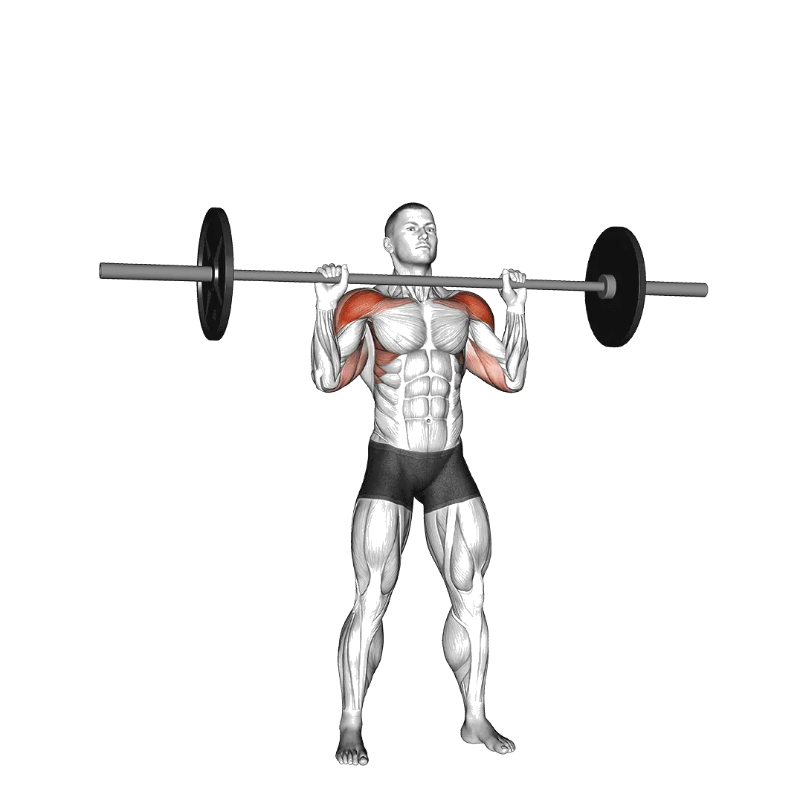

ミリタリープレス
ミリタリープレスの平均重量と基準重量を、肩の代表種目として確認できます。主働筋は三角筋です。
平均重量
肩肩トレ肩トレーニング三角筋プレス

鍛えられる筋肉
| グループ | 筋肉 |
|---|---|
| 主働筋 | 三角筋 |
| 副働筋 | 上腕三頭筋, 上腕二頭筋, 僧帽筋 |
| 安定筋 | 外腹斜筋, 脊柱起立筋 |
| グリップ | 前腕屈筋群 |
ミリタリープレス 平均重量 [1RM]
| レベル | ||
|---|---|---|
| 基礎 | 31 kg (69 lbs) |
14 kg (31 lbs) |
| 初級 | 46 kg (101 lbs) |
23 kg (50 lbs) |
| 中級 | 64 kg (142 lbs) |
34 kg (76 lbs) |
| 上級 | 86 kg (189 lbs) |
48 kg (106 lbs) |
| プロ | 109 kg (241 lbs) |
64 kg (140 lbs) |
注：これらの基準は平均的なリフターを基準にした1RMの目安です。体重や年齢などの個人的要因によって異なる場合があります。より詳細なデータは以下のとおりです。
ミリタリープレス 基準重量(kg)
男性・体重別(kg)データ [1RM]
| 体重 | 基礎 | 初級 | 中級 | 上級 | プロ |
|---|---|---|---|---|---|
| 50 | 15 | 24 | 36 | 50 | 66 |
| 55 | 18 | 28 | 41 | 56 | 73 |
| 60 | 22 | 32 | 46 | 62 | 79 |
| 65 | 25 | 36 | 51 | 67 | 85 |
| 70 | 28 | 40 | 55 | 72 | 91 |
| 75 | 31 | 44 | 59 | 77 | 97 |
| 80 | 34 | 48 | 64 | 82 | 102 |
| 85 | 37 | 51 | 68 | 87 | 107 |
| 90 | 40 | 55 | 72 | 91 | 112 |
| 95 | 43 | 58 | 76 | 96 | 117 |
| 100 | 46 | 61 | 79 | 100 | 122 |
| 105 | 49 | 65 | 83 | 104 | 126 |
| 110 | 52 | 68 | 87 | 108 | 130 |
| 115 | 54 | 71 | 90 | 112 | 135 |
| 120 | 57 | 74 | 94 | 116 | 139 |
| 125 | 60 | 77 | 97 | 119 | 143 |
| 130 | 62 | 80 | 100 | 123 | 147 |
| 135 | 65 | 82 | 103 | 126 | 151 |
| 140 | 67 | 85 | 106 | 130 | 155 |
男性・年齢別データ [1RM]
| 年齢 | 基礎 | 初級 | 中級 | 上級 | プロ |
|---|---|---|---|---|---|
| 15 | 27 | 39 | 55 | 73 | 93 |
| 20 | 30 | 45 | 63 | 84 | 106 |
| 25 | 31 | 46 | 64 | 86 | 109 |
| 30 | 31 | 46 | 64 | 86 | 109 |
| 35 | 31 | 46 | 64 | 86 | 109 |
| 40 | 31 | 46 | 64 | 86 | 109 |
| 45 | 30 | 44 | 61 | 81 | 104 |
| 50 | 28 | 41 | 57 | 76 | 97 |
| 55 | 26 | 38 | 53 | 71 | 90 |
| 60 | 23 | 35 | 48 | 65 | 82 |
| 65 | 21 | 31 | 44 | 58 | 74 |
| 70 | 19 | 28 | 39 | 52 | 67 |
| 75 | 17 | 25 | 35 | 47 | 60 |
| 80 | 15 | 22 | 31 | 42 | 53 |
| 85 | 14 | 20 | 28 | 37 | 48 |
| 90 | 12 | 18 | 25 | 34 | 43 |
女性・体重別(kg)データ [1RM]
| 体重 | 基礎 | 初級 | 中級 | 上級 | プロ |
|---|---|---|---|---|---|
| 40 | 7 | 14 | 22 | 33 | 45 |
| 45 | 9 | 16 | 25 | 36 | 48 |
| 50 | 11 | 18 | 27 | 39 | 52 |
| 55 | 12 | 20 | 30 | 42 | 55 |
| 60 | 14 | 22 | 32 | 45 | 58 |
| 65 | 15 | 23 | 34 | 47 | 61 |
| 70 | 16 | 25 | 36 | 50 | 64 |
| 75 | 18 | 27 | 38 | 52 | 67 |
| 80 | 19 | 28 | 40 | 54 | 69 |
| 85 | 20 | 30 | 42 | 56 | 72 |
| 90 | 22 | 32 | 44 | 58 | 74 |
| 95 | 23 | 33 | 46 | 60 | 76 |
| 100 | 24 | 34 | 47 | 62 | 79 |
| 105 | 25 | 36 | 49 | 64 | 81 |
| 110 | 26 | 37 | 51 | 66 | 83 |
| 115 | 27 | 39 | 52 | 68 | 85 |
| 120 | 29 | 40 | 54 | 69 | 86 |
女性・年齢別データ [1RM]
| 年齢 | 基礎 | 初級 | 中級 | 上級 | プロ |
|---|---|---|---|---|---|
| 15 | 12 | 19 | 29 | 41 | 54 |
| 20 | 14 | 22 | 33 | 47 | 62 |
| 25 | 14 | 23 | 34 | 48 | 64 |
| 30 | 14 | 23 | 34 | 48 | 64 |
| 35 | 14 | 23 | 34 | 48 | 64 |
| 40 | 14 | 23 | 34 | 48 | 64 |
| 45 | 13 | 22 | 33 | 46 | 60 |
| 50 | 12 | 20 | 31 | 43 | 57 |
| 55 | 11 | 19 | 28 | 40 | 52 |
| 60 | 10 | 17 | 26 | 36 | 48 |
| 65 | 9 | 15 | 23 | 33 | 43 |
| 70 | 8 | 14 | 21 | 29 | 39 |
| 75 | 8 | 12 | 19 | 26 | 35 |
| 80 | 7 | 11 | 17 | 23 | 31 |
| 85 | 6 | 10 | 15 | 21 | 28 |
| 90 | 5 | 9 | 14 | 19 | 25 |
注：ジムのバーベルは基本的に20kgです。
テーブルの見方
| レベル | 説明 | 分布 |
|---|---|---|
| 基礎 | 正しいフォームを身につけ、1か月以上継続してトレーニングに励む。 | 下位 5% |
| 初級 | 6か月以上継続的にトレーニングに励む。 | 上位 80% |
| 中級 | ２年以上継続的にトレーニングに励む。 | 上位 50% |
| 上級 | 5年以上継続的にトレーニングに励む。 | 上位 20% |
| プロ | 5年以上当該メニューを専門にトレーニング。 | 上位 5% |
その他のワークアウト
全身

デッドリフト
全身 / BIG3

ベンチプレス
全身 / BIG3

スクワット
全身 / BIG3

ヘックスバーデッドリフト
全身

パワークリーン
全身

ルーマニアンデッドリフト
全身

相撲デッドリフト
全身

クリーン&ジャーク
全身

スナッチ
全身

クリーン
全身

クリーン&プレス
全身

ラックプル
全身

ダンベルルーマニアンデッドリフト
全身 / ダンベル

ハングクリーン
全身

スティフレッグデッドリフト
全身

マッスルアップ
全身 / 自重

パワースナッチ
全身

スラスター
全身

プッシュジャーク
全身

ダンベルデッドリフト
全身 / ダンベル

ディフィシットデッドリフト
全身

片足ルーマニアンデッドリフト
全身

バーピージャンプ
全身 / 自重

ハングパワークリーン
全身

スプリットジャーク
全身

ダンベルスナッチ
全身 / ダンベル

クリーンハイプル
全身

スナッチデッドリフト
全身

クリーンプル
全身

ポーズデッドリフト
全身

片足デッドリフト
全身

マッスルスナッチ
全身

ジェファーソンデッドリフト
全身

スナッチプル
全身

ウォールボール
全身

ザーチャーデッドリフト
全身

片足ダンベルデッドリフト
全身 / ダンベル

ダンベルクリーン&プレス
全身 / ダンベル

リングマッスルアップ
全身 / 自重

ダンベルスラスター
全身 / ダンベル

ハングスナッチ
全身

ダンベルハイプル
全身 / ダンベル

ダンベルハングクリーン
全身 / ダンベル

後背デッドリフト
全身

クラッププルアップ
全身

スクワットスラスト
全身
胸
ベンチプレス
胸 / BIG3

ダンベルベンチプレス
胸 / ダンベル

腕立て伏せ
胸 / 自重

インクラインベンチプレス
胸

インクラインダンベルベンチプレス
胸 / ダンベル

クロースグリップベンチプレス
胸

マシーンチェストフライ
胸 / マシン

ダンベルフライ
胸 / ダンベル

デクラインダンベルフライ
胸 / ダンベル

デクラインベンチプレス
胸

スミスマシーンベンチプレス
胸 / マシン

ケーブルフライ
胸 / ケーブル

チェストプレス
胸

フロアプレス
胸

インクラインダンベルフライ
胸 / ダンベル

ダンベルフロアプレス
胸 / ダンベル

デクラインダンベルベンチプレス
胸 / ダンベル

ポーズベンチプレス
胸

片腕立て伏せ
胸 / 自重

逆手ベンチプレス
胸

ダイヤモンドプッシュアップ
胸 / 自重

クロースグリップダンベルベンチプレス
胸 / ダンベル

ベンチピンプレス
胸

ワイドグリップベンチプレス
胸

デクライン腕立て伏せ
胸 / 自重

クロースグリップインクラインベンチプレス
胸

インクライン腕立て伏せ
胸 / 自重

クロースグリップ腕立て伏せ
胸 / 自重

アーチャープッシュアップ
胸 / 自重

スポトプレス
胸
背中
デッドリフト
背中 / BIG3

懸垂
背中 / 自重

ベントオーバーロウ
背中

ラットプルダウン
背中

チンニング
背中 / 自重

ダンベルロウ
背中 / ダンベル

シーテッドケーブルロウ
背中 / ケーブル

バーベルシュラッグ
背中 / バーベル

Tバーロウ
背中

ダンベルシュラッグ
背中 / ダンベル

ペンドレイロウ
背中

マシーンロウ
背中 / マシン

ダンベルプルオーバー
背中 / ダンベル

ダンベルリバースフライ
背中 / ダンベル

チェストサポートダンベルロウ
背中 / ダンベル

クロースグリップラットプルダウン
背中

マシーンリバースフライ
背中 / マシン

リバースグリップラットプルダウン
背中

ニュートラルグリップ懸垂
背中 / 自重

ストレートアームプルダウン
背中

ケーブルリバースフライ
背中 / ケーブル

イェーツロウ
背中

ベントオーバーダンベルロウ
背中 / ダンベル

バックエクステンション
背中

シールロウ
背中

マシーンバックエクステンション
背中 / マシン

バーベルプルオーバー
背中 / バーベル

片腕懸垂
背中 / 自重

ダンベルシールロウ
背中 / ダンベル

インヴァーテッドロウ
背中

レネゲードロウ
背中

片腕ラットプルダウン
背中

片腕シーテッドケーブルロウ
背中 / ケーブル

ケーブルアップライトロウ
背中 / ケーブル

マシーンシュラッグ
背中 / マシン

ヘックスバーシュラッグ
背中

スミスマシーンシュラッグ
背中 / マシン

ダンベルインクラインYレイズ
背中 / ダンベル

ケーブルシュラッグ
背中 / ケーブル

ベントアームバーベルプルオーバー
背中 / バーベル

バーベルパワーシュラッグ
背中 / バーベル

メドウズロウ
背中

後背バーベルシュラッグ
背中 / バーベル

リバースハイパーエクステンション
背中
肩

ショルダープレス
肩

ダンベルショルダープレス
肩 / ダンベル

ダンベルラテラルレイズ
肩 / ダンベル

ミリタリープレス
肩

シーテッドショルダープレス
肩

シーテッドダンベルショルダープレス
肩 / ダンベル

マシーンショルダープレス
肩 / マシン

プッシュプレス
肩

アップライトロウ
肩

ダンベルフロントレイズ
肩 / ダンベル

ケーブルラテラルレイズ
肩 / ケーブル

アーノルドプレス
肩

フェイスプル
肩

ネックカール
肩

ダンベルアップライトロウ
肩 / ダンベル

マシーンラテラルレイズ
肩 / マシン

ビハインドネックプレス
肩

垂直腕立て伏せ
肩 / 自重

バーベルフロントレイズ
肩 / バーベル

ログプレス
肩

ランドマインプレス
肩

ネックエクステンション
肩

Zプレス
肩

ヴァイキングプレス
肩

ショルダーピンプレス
肩

ダンベルZプレス
肩 / ダンベル

片腕ランドマインプレス
肩

ダンベルエクスターナルローテーション
肩 / ダンベル

パイクプッシュアップ
肩 / 自重

ダンベルプッシュプレス
肩 / ダンベル

ダンベルフェイスプル
肩 / ダンベル

ケーブルエクスターナルローテーション
肩 / ケーブル
腕

ダンベルカール
腕 / ダンベル

バーベルカール
腕 / バーベル

ハンマーカール
腕

EZバーカール
腕

プリーチャーカール
腕

ケーブルバイセップカール
腕 / ケーブル

ダンベルコンセントレーションカール
腕 / ダンベル

インクラインダンベルカール
腕 / ダンベル

マシーンバイセップカール
腕 / マシン

ストリクトカール
腕

片腕ケーブルバイセップカール
腕 / ケーブル

片腕ダンベルプリーチャーカール
腕 / ダンベル

インクラインハンマーカール
腕

スパイダーカール
腕

ゾットマンカール
腕

シーテッドダンベルカール
腕 / ダンベル

チートカール
腕

ケーブルハンマーカール
腕 / ケーブル

オーバーヘッドケーブルカール
腕 / ケーブル

インクラインケーブルカール
腕 / ケーブル

ライングケーブルカール
腕 / ケーブル

ディップス
腕 / 自重

トライセッププッシュダウン
腕

スカルクラッシャー
腕

トライセップローププッシュダウン
腕

片腕プルダウン
腕

ダンベルトライセップエクステンション
腕 / ダンベル

バーベルフレンチプレス
腕 / バーベル

ライングダンベルトライセップエクステンション
腕 / ダンベル

シーテッドディップスマシーン
腕 / マシン

ダンベルキックバック
腕 / ダンベル

ケーブルオーバーヘッドエクステンション
腕 / ケーブル

マシーントライセップエクステンション
腕 / マシン

シーテッドダンベルフレンチプレス
腕 / ダンベル

逆手プッシュダウン
腕

JMプレス
腕

テイトプレス
腕

リングディップス
腕 / 自重

ベンチディップス
腕 / 自重

リストカール
腕

リバースバーベルカール
腕 / バーベル

リバースリストカール
腕

ダンベルリストカール
腕 / ダンベル

ダンベルリバースリストカール
腕 / ダンベル

ダンベルリバースカール
腕 / ダンベル
脚
スクワット
脚 / BIG3

スレッドレッグプレス
脚

フロントスクワット
脚

ヒップスラスト
脚

レッグエクステンション
脚

平行レッグプレス
脚

ハックスクワット
脚

シーテッドレッグカール
脚

ダンベルブルガリアンスプリットスクワット
脚 / ダンベル

ゴブレットスクワット
脚

ライングレッグカール
脚

マシーンカーフレイズ
脚 / マシン

ダンベルランジ
脚 / ダンベル

ボックススクワット
脚

自重スクワット
脚

垂直レッグプレス
脚

ブルガリアンスプリットスクワット
脚

シーテッドカーフレイズ
脚

スミスマシーンスクワット
脚 / マシン

ヒップアブダクション
脚

グッドモーニング
脚

ザーチャースクワット
脚

バーベルランジ
脚 / バーベル

ヒップアダクション
脚

オーバーヘッドスクワット
脚

バーベルカーフレイズ
脚 / バーベル

ダンベルスクワット
脚 / ダンベル

スプリットスクワット
脚

ダンベルカーフレイズ
脚 / ダンベル

ケーブルプルスルー
脚 / ケーブル

スタンディングレッグカール
脚

ランドマインスクワット
脚

バーベルリバースランジ
脚 / バーベル

バーベルグルートブリッジ
脚 / バーベル

片足レッグプレス
脚

スレッドプレスカーフレイズ
脚

片足スクワット
脚

ベルトスクワット
脚

セーフティーバースクワット
脚

ピストルスクワット
脚

ポーズスクワット
脚

バーベルハックスクワット
脚 / バーベル

相撲スクワット
脚

ケーブルキックバック
脚 / ケーブル

自重カーフレイズ
脚

ランジ
脚

グルートブリッジ
脚

ピンスクワット
脚

ウォーキングランジ
脚

ダンベルフロントスクワット
脚 / ダンベル

ダンベルスプリットスクワット
脚 / ダンベル

リバースランジ
脚

スクワットジャンプ
脚

ノルディックハムストリングカール
脚

シシースクワット
脚

ハーフスクワット
脚

グルートハムレイズ
脚

ケーブルレッグエクステンション
脚 / ケーブル

片足シーテッドカーフレイズ
脚

サイドランジ
脚

グルートキックバック
脚

ドンキーカーフレイズ
脚

ダンベルウォーキングカーフレイズ
脚 / ダンベル

サイドレッグレイズ
脚 / 自重

ジェファーソンスクワット
脚

フロアヒップアブダクション
脚

ヒップエクステンション
脚

フロアヒップエクステンション
脚
体幹

上体起こし
体幹 / 自重

ケーブルクランチ
体幹 / ケーブル

マシーンシーテッドクランチ
体幹 / マシン

クランチ
体幹 / 自重

ダンベルサイドベンド
体幹 / ダンベル

ケーブルウッドチョッパー
体幹 / ケーブル

ハンギングレッグレイズ
体幹 / 自重

ロシアンツイスト
体幹 / 自重

ライングレッグレイズ
体幹 / 自重

デクラインシットアップ
体幹 / 自重

ハンギングニーレイズ
体幹 / 自重

腹筋ローラー
体幹

トーズトゥーバー
体幹 / 自重

デクラインクランチ
体幹 / 自重

ジャンピングジャック
体幹 / 自重

バイシクルクランチ
体幹 / 自重

リバースクランチ
体幹 / 自重

フラッターキックス
体幹 / 自重

マウンテンクライマー
体幹 / 自重

ハイプーリークランチ
体幹

スタンディングケーブルクランチ
体幹 / ケーブル

スーパーマン
体幹 / 自重

サイドクランチ
体幹 / 自重

ルーマンチェアサイドベンド
体幹

シザーキックス
体幹 / 自重